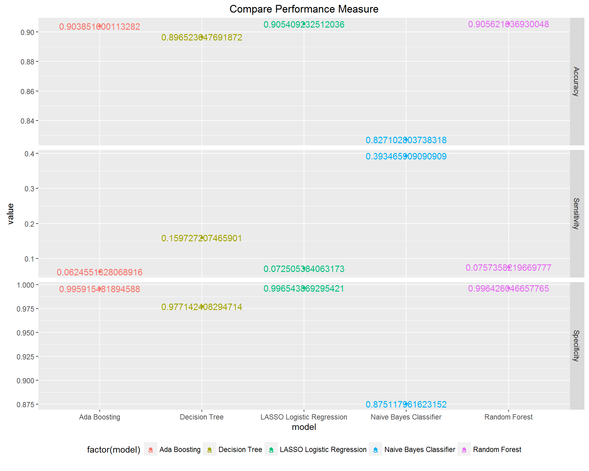

 <!-- Discussion Section -->
    <section  id="discussion">
        <div class="container">
            <div class="row">
                <div class="col-lg-12 text-center">
                    <h2>Discussion</h2>
                    <hr class="discussion-primary">
                </div>
            </div>
            <div class="row">
                
                <div class="col-lg-8 col-lg-offset-2 text-center">
                <p> We compared the performance of the best model given by each approach along measures of accuracy, sensitivity, and specificity. As expected for such high-dimensional data, we found that each of the algorithms had unique strengths in either performance or interpretability.</p>
                
                                        <br>

                </div>
                
                <div class="col-lg-4 col-lg-offset-2">
                    <p><strong>LASSO: </strong>it clearly does not yield the best performing model, and in fact, the sensitivity is very low, but an advantage is that the coefficients are interpretable in the same way that the usual logistic regression coefficients are interpreted. E.g., having a certain feature results in an increase in the log odds of being a high cost patient of X amount, where X is the coefficient corresponding to that feature.</p>

                    <p><strong>Naive Bayes: </strong>based on Bayes’ rule and independence assumption, works surprisingly well, especially high sensitivity rate. However, there is no directly interpretable decision rule that can be drawn from it.</p>
                </div>
                <div class="col-lg-4 ">
                    <p><strong>Decision Tree: </strong>recursively divides sample space and makes interpretable decision rule, however, the inflexible nature of the division mechanism makes the prediction performance not as optimal as other methods, and in this case, the interpretability is not that good.</p>

                    <p><strong>Random Forest: </strong>based on two great ideas – Bootstrapping and Ensemble voting, works well which is not surprising. However, the result lacks interpretability.</p>

                    <p><strong>Boosting:</strong> based on the idea of Ensemble voting, has the same disadvantage as RF which is lack of interpretability.</p>
                </div>
                
                <div class="col-lg-8 col-lg-offset-2 text-center"><br>
                <h3>Top Five Features by Model </h3>
                    
                </div>

                <div class="col-lg-8 col-lg-offset-2 text-center"> <br>
                  <p>Due to the high dimensionality nature of the problem, no single algorithm excels in all three performance measure and interpretability. But some of them work well enough in the sense that we could have high percentage target rate among true high cost patients cohort, and also overall accuracy. All algorithms have some measure of feature importance, we can compare across them and draw a common set of features, further research is needed to make this project’s result into actionable clinical meaningful evidence. </p>
                </div>
            </div>
        </div>
    </section>